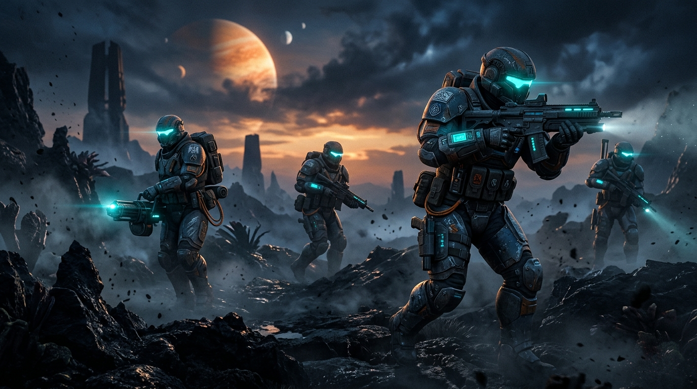

PRÉSENTATION DU PROJET
Sovereign Republic est une simulation militaire et un bac à sable RP multijoueur à grande échelle (100+ joueurs simultanés) inspiré des serveurs Star Wars RP de Garry's Mod et de la rigueur tactique de jeux comme Squad ou Arma. Développé en 100% C++ sous Unreal Engine 5 en collaboration avec un ami en full-remote, le projet combine une chaîne de commandement militaire immersive, une VoIP radio multi-fréquences, des opérations scénarisées en temps réel par des Game Masters, et une architecture serveur dédié taillée pour 100+ joueurs sans compromis de performance.

SOVEREIGN REPUBLIC // SQUAD COMBATARCHITECTURE RÉSEAU & SERVEUR DÉDIÉ (100+ JOUEURS)
-
> Replication Graph & Network LOD :
Gestion dynamique de la fréquence de réplication en fonction de la distance, du champ de vision et de la priorité tactique. Réduction drastique de la bande passante par client pour garantir 60Hz stable côté serveur avec plus de 100 joueurs. -
> Prédiction Client & Réconciliation :
Système de prédiction locale pour les tirs de blaster, déplacements d'escouade et compétences, avec correction d'erreur serveur fluide pour éliminer toute sensation de latence.
> CLIENT COUNT: 100+ CONCURRENT
> REPLICATION GRAPH: ACTIVE (SPATIAL GRID)
> BANDWIDTH BUDGET: OPTIMIZED (< 25 KB/S PER CLIENT)
> PACKET COMPRESSION & DELTA SERIALIZATION: ON
IMMERSION RP MILITAIRE & HIÉRARCHIE (STYLE SQUAD / GMOD SWRP)
-
> Régiments Clones, Spécialisations & Hiérarchie :
Système de légions et spécialisations (Commandos, 501e, 212e, Garde, Médecins, Démolisseurs, Pilotes) avec chaîne de commandement, gestion des permissions, ordres tactiques et holotables de briefing. -
> Communications Radio & VoIP Spatialisée 3D :
Système radio militaire multi-fréquences (Canal Escouade, Commandement Inter-Régiments, Fréquence Générale) avec atténuation spatiale de proximité réaliste pour une coordination millimétrée.
OPÉRATIONS SCÉNARISÉES EN DIRECT & ÉVÉNEMENTS GAME MASTER (ZEUS)
-
> Missions Scénarisées & Alertes Vaisseau :
Opérations dynamiques dirigées en direct par les Game Masters (via le plugin Jupiter) : alertes de bord sur croiseur Venator, assauts planétaires, déploiements en canonnière LAAT et fortifications d'avant-postes (FOB) face aux vagues Séparatistes.
ÉCOSYSTÈME DE PLUGINS SUR-MESURE (C++)
Pour répondre aux exigences de Sovereign Republic (100+ joueurs, gameplay commando, animation de scénarios RP en direct), j'ai conçu et développé une suite complète de plugins C++ modulaires intégrés au cœur du projet :
STELLAR LOCOMOTION
Framework complet de véhicules terrestres et spatiaux, multi-crew (pilote, canonniers, passagers) et physique avancée conçu spécifiquement pour le projet.
VOIR LE PLUGIN STELLAR >>JUPITER GM SUITE
Outil d'animation temps réel inspiré du système Zeus d'Arma 3, permettant aux animateurs de manipuler le monde, spawner des vagues et diriger les batailles RP en direct.
VOIR LE PLUGIN JUPITER >>STELLAR BUILDER
Système de construction tactique en vue FPS (FOB, barricades, générateurs de boucliers). Double interface (Menu radial d'urgence & grand catalogue Datapad avec recherche/favoris), prévisualisation Ghost, snapping intelligent et optimisation HISM via Jupiter.
VOIR LE PLUGIN STELLAR BUILDER >>SMOOTH NETWORK SYNC
Algorithme d'interpolation Hermite, prédiction client et compression réseau custom pour une synchronisation fluide et sans saccades à plus de 100 joueurs.
VOIR LE PLUGIN SMOOTH SYNC >>PRISM UI
Framework UI C++ zero-tick pour UMG avec tokens sémantiques et widget pooling garantissant un HUD commando réactif et ultra-léger.
VOIR LE PLUGIN PRISM UI >>STELLAR AUDIO
Sous-système audio multijoueur avec pooling de composants sonores, réplication Multicast RPC et communications radio spatialisées par fréquences.
VOIR LE PLUGIN STELLAR AUDIO >>